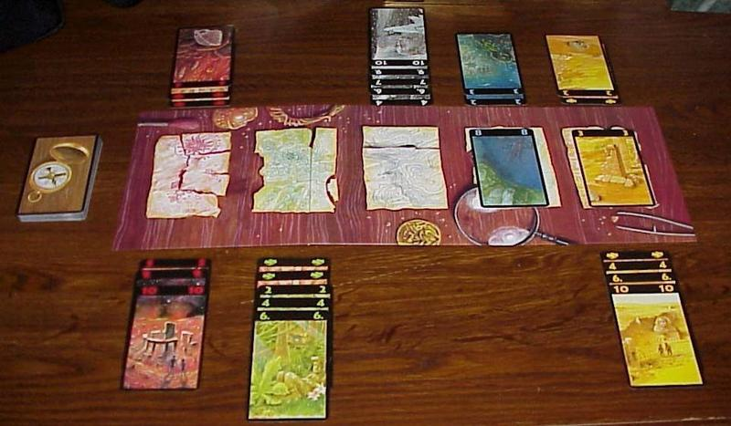
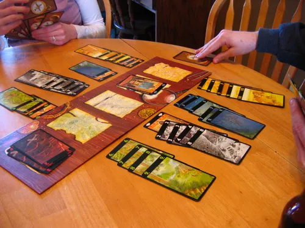
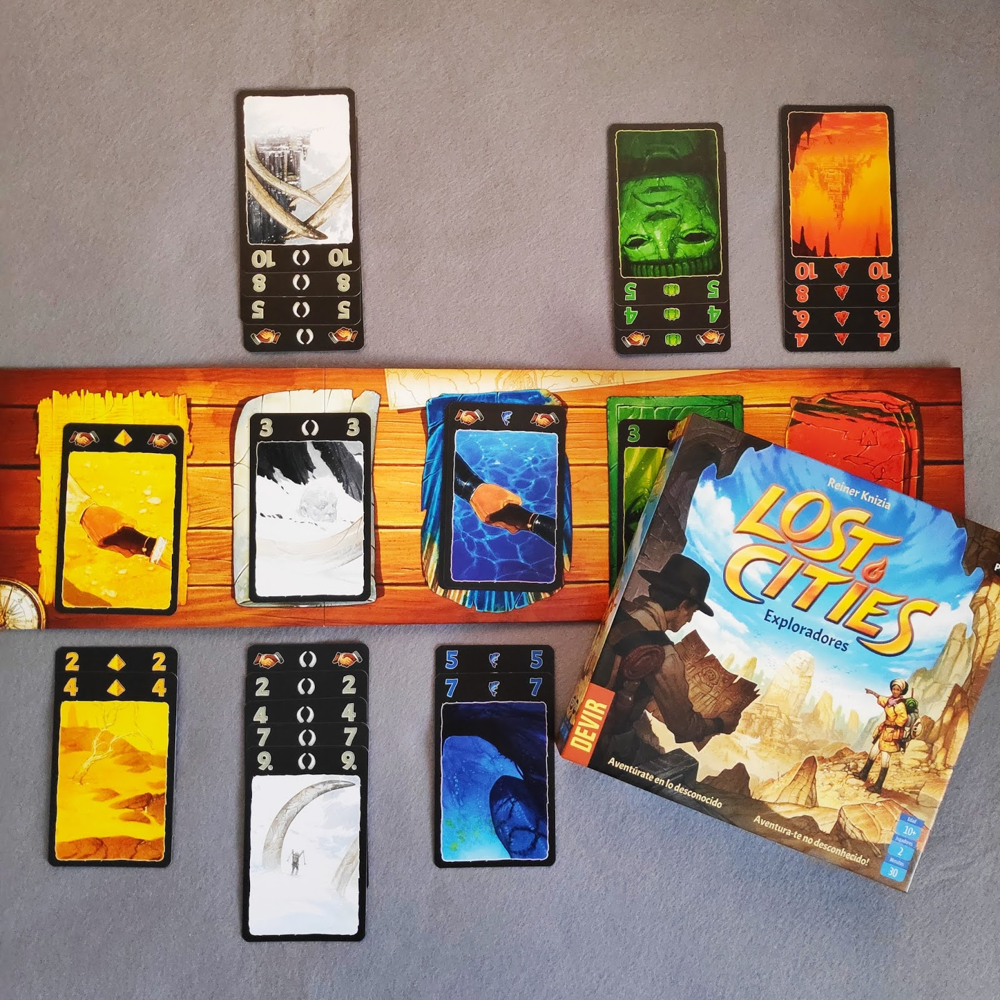

Com jugar a Exploradores
Guia visual pas a pas



Mecàniques Detallades
Expedicions
Sempre has de jugar cartes de valor ascendent. No pots posar un 5 si ja has posat un 7!
Descarts
Pots deixar cartes al mig del tauler, però compte: el teu oponent les pot agafar!
Final del Joc
La partida acaba quan s'esgota la pila de robatori. Guanya qui té més punts de prestigi.